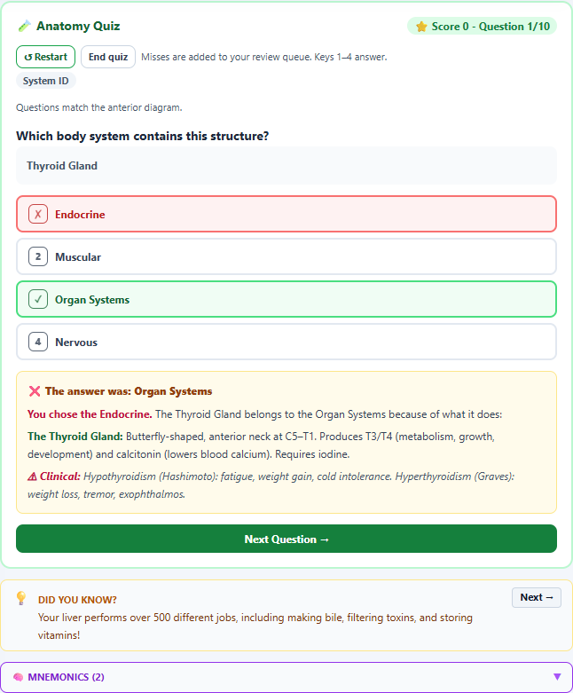

Anatomy tool review
The anatomy tool has a strong foundation: an accessible structure browser, several useful visual representations, guided tours, retrieval practice, review scheduling, explanatory scenarios, and portable study records. Its most valuable next step is a coordinated improvement to scientific content, assessment validity, and the learning journey. More modes would have less immediate value than making the existing modes accurate, coherent, and easier to use.
The highest-priority defect is a quiz that can penalize correct anatomy knowledge. In a reproduced question about the thyroid gland, selecting Endocrine is marked wrong and Organ Systems is marked correct. Other confirmed problems include inaccurate elementary skull wording, misleading absolute claims in structure descriptions, an ambiguous learning-level control, and substantial remaining English-only content.
This review addresses the current local implementation as of September 12, 2026, with the existing school-to-introductory-anatomy audience as its primary frame. Advanced clinical features receive a separate assessment. Recommendations are product judgments informed by the cited evidence; they are not findings from a learner study of this tool.
Recommended priorities. “First” means correct before expanding content or promoting the tool as a reliable anatomy assessment. Effort describes relative implementation scope, not a delivery estimate.
| Priority | Opportunity | Why it matters | Relative effort |
|---|---|---|---|
| First | Separate scientific system membership from navigation categories | Correct answers can currently be graded wrong and entered into the practice queue | Medium |
| First | Correct the identified science statements and clinical examples | Errors recur in descriptions, quizzes, speech, and study materials | Small–medium |
| First | Give content a shared source and review record | Parallel versions of the same concept currently contradict each other | Medium |
| Next | Make the learning-level control govern the experience it promises | Selecting K–5 does not necessarily produce elementary explanations | Medium |
| Next | Bring the mobile explanation and recall task closer to the diagram and top of the page | Important learning content still requires substantial scrolling | Medium |
| Next | Turn existing scenarios into short, guided learning sequences | Learners need a clear purpose and next step among many available modes | Medium |
| Next | Separate confidence, exposure, and demonstrated learning | Self-ratings and clicks should not imply verified mastery | Medium |
| Next | Make Homeostasis show a feedback response | Its current controls mostly teach reference-range classification | Medium–large |
| Next | Finish core localization and manual accessibility verification | The current breadth of features exceeds the verified language and assistive-technology coverage | Medium–large |
| Later | Expand spatial transfer, varied cases, body variation, and adaptive review | These deepen an already substantial foundation once correctness is secure | Medium–large |
What is already working. The current content inventory contains 128 structure records across ten navigation groups, ten guided tours, ten system connections, four pathways, eight clinical cases, and four Systems in Motion scenarios. The main interface exposes nine learning modes to a grade-5 profile and eleven to the sampled grade-8 profile. These counts describe this catalog, not the total number of anatomical structures or the only valid way to classify human organ systems.
Several recommendations from the September 4 review have already been implemented. Quiz order and feedback are preserved across responses; hidden flashcard announcements avoid revealing the answer; review timestamps refresh with accepted evidence; separate card rounds resume by context; notes, exports, import previews, and phone study controls exist. There are also keyboard controls, text alternatives, orientation labels, reduced-motion handling, camera presets, model-source disclosures, and recovery paths. The review does not treat those capabilities as missing. Existing review, study workspace implementation.
Scientific accuracy: fix the category model and its answer keys. The “Organ Systems” group mixes lungs, digestive organs, urinary organs, diaphragm, thyroid, and adrenal glands. Meanwhile, Endocrine has separately named records such as pancreatic islets and another adrenal entry. Organ systems genuinely overlap; a useful introductory classification commonly distinguishes eleven systems, including digestive and urinary. The issue is not simply whether the interface has ten or eleven buttons. It is that its navigation grouping becomes scientific truth in the quiz. 1
The System ID question excludes distractors only when the same structure ID appears in another navigation group. It then takes the current group as the sole correct answer. A local browser reproduction used Organ Systems, anterior view, full detail, a grade-8 context, and an existing valid quiz index of 90. The resulting thyroid question offered Endocrine, Muscular, Organ Systems, and Nervous. Selecting Endocrine stored correct: false, explained that the thyroid belongs to “Organ Systems,” and marked the thyroid as needing practice. The index was seeded to reproduce the generated question directly; this was not the first question of a fresh round. At another valid thyroid question index, Endocrine was absent from the options altogether.
Use canonical organ records with systemMemberships, an optional primary teaching system, and separate navigation collections. Give digestive and urinary anatomy clear homes. Preserve one identity for the thyroid, pancreas, gonads, and adrenal glands across contexts, with explicit parent/substructure relationships where appropriate. A question should name the relationship it assesses and accept every scientifically valid answer that it offers. Where a single-choice prompt is inherently ambiguous, rewrite it or use a multiple-response format. The same membership data should drive explanations and the relationship map.
Acceptance criteria: thyroid → endocrine, kidneys → urinary, lungs → respiratory, and pancreas → digestive/endocrine all remain scientifically correct regardless of the route used to open them. No valid membership appears as an incorrect distractor. Correct responses must also preserve the learner’s evidence record. Answer-key logic, reproduced result.

Scientific accuracy: make a focused correction pass. The following examples warrant correction or qualification. These are distinct from optional requests for greater detail.
| Current content and location | Assessment | Recommended correction |
|---|---|---|
| Grades 3–5 skull description: “22 bones fused together” (line 3467) | Incorrect simplification. It also conflicts with the same card’s puzzle-piece explanation and advanced suture note. | Explain that most skull bones meet at strong seams called sutures and that the lower jaw moves. Do not imply that all 22 fuse into one bone. 2, 3 |
| Fibula: “Non-weight-bearing” (line 3003) | An absolute that contradicts measured load transmission. | Say the tibia bears most of the load while the fibula contributes to load transmission and ankle stability. Do not replace this with a universal percentage: the experimental result varies with position and loading. 4 |
| Triceps: “Only elbow extensor” (line 3021) | Incorrect exclusion of the anconeus contribution. | “Primary elbow extensor; the anconeus assists.” The existence of assistance is the relevant teaching point, not a fixed force share. 5 |
| Sternum: site for bone marrow “biopsy” (line 2991) | Conflates aspiration with core biopsy. | Distinguish selected sternal aspiration from core biopsy; use iliac-crest sampling as the general example. A procedural reference explicitly contraindicates sternal biopsy. This is an educational-content correction, not a procedural lesson. 6 |
| Deltoid: avoid IM injection in children under three (line 3018) | Overbroad clinical rule. | Remove the blanket age rule. If vaccination is the example, explain that site selection depends on age and muscle mass; CDC permits the deltoid for some toddlers with adequate muscle mass. Link the specific guidance. 7 |
| Kidney fun fact equates repeated whole-blood filtering with 180 liters (fact bank) | Blurs blood flow, glomerular filtrate, and final urine. | Explain that an adult reference estimate is roughly 180 L of filtrate per day, most reabsorbed. Distinguish the three quantities visually. 8 |
| Mammary gland: screening “from age 40–50” (line 3190) | Underspecified guideline content, rather than a stable anatomy fact. | Remove the detached age range or identify the guideline, date, population, and jurisdiction. For example, the current USPSTF recommendation specifies biennial screening at ages 40–74 for its defined population; other guidelines differ. 9 |
| Altitude case includes breathlessness at rest and cough, but explains only lower oxygen pressure (case bank) | The mechanism is relevant, but the presentation can suggest serious altitude illness and the explanation is incomplete. | For a basic mechanism question, use uncomplicated exertional breathlessness. Alternatively, make recognition of concerning symptoms the objective and explain why pulmonary edema must be considered; do not diagnose it from the vignette alone. 10 |
| Stair-climbing scenario begins with the biceps record and then describes force at the knee (line 3675) | The displayed sequence does not maintain a coherent anatomical chain. | Use quadriceps and its knee-extensor linkage, or explicitly label the biceps scene as a separate example of a general muscle mechanism. |
The fun-fact bank also needs a systematic evidence pass. Statements about bone versus steel, a cubic inch supporting a particular force, skin stretching to three times its size, a tennis-court alveolar area, and sperm being “10 times smaller” lack the measurement conditions needed to interpret them. These are flagged for sourcing and qualification, not all declared false. Define the quantity, population, units, and uncertainty. Replace unsupported superlatives with a measurable question or a bounded estimate. Fact bank.
Scientific accuracy: review concepts across every presentation. Structure functions, elementary explanations, myth cards, tour narration, clinical cases, and fact banks are separate data blocks. Fixing one string does not fix its siblings. The skull discrepancy is an example of this maintenance problem. Asset provenance is already documented for some models, but that does not establish the accuracy of the prose or every anatomical mapping.
Create a concept-level content record containing the scientific claim, suitable elementary and advanced wording, source reference, qualifications, review date, and review status. Keep translations linked to the same record. Derive quiz explanations and speech from that record wherever possible. Give clinical recommendations a separate review lifecycle because they can change while core anatomy remains stable. Acceptance should require agreement across the visual card, narration, quiz feedback, tour, and exported study material for the corrected concepts.
Pedagogy: give each activity a clear learning objective. The tool can already support a strong progression: locate a structure, explain its function, connect it to another system, and predict the consequence of a change. Make that progression explicit in a short guided session. A learner could choose “How does climbing stairs increase breathing?” and complete a selected sequence of existing views, instead of first deciding among eleven modes.
For younger learners, center naming, location, and a simple structure–function explanation. For middle school, emphasize evidence about interacting systems and groups of cells. For advanced learners, add spatial relations, mechanism, exceptions, and uncertainty in cases. NGSS MS-LS1-3 emphasizes evidence for interacting subsystems; it also bounds its assessment away from detailed mechanisms of one isolated system. A large clinical vocabulary therefore should not be treated as the defining middle-school achievement. 11
Build on Systems in Motion rather than duplicating it. It already contains exercise, meal, stress, and skin-repair scenarios with mechanisms, perturbations, intervention choices, feedback, and synthesis. Add a prediction before revealing the perturbation, require an explanation using an observed change, and end with a related but unfamiliar situation. These additions turn viewing and selecting into a more complete reasoning task. Acceptance: each recommended session ends with a response that requires something beyond repeating the structure’s name. Scenario implementation.
Pedagogy: assess explanation and transfer alongside recognition. Quiz, Cards, Spotter, and the recap activities provide useful retrieval practice. Some prompts, however, are generated by masking names in descriptions and selecting distractors from the visible pool. Random alternatives can be obviously unrelated; masking can leave awkward text; and the surrounding selected system can cue a System ID answer even after its scientific mapping is corrected. These are assessment-design risks, not evidence that every generated question is invalid.
Author a smaller set of deliberate misconception-based items for foundational concepts. Include location from a changed view, a short functional explanation, comparison of related structures, and prediction after a perturbation. Give distractor-specific feedback: explain why an artery is defined by direction of flow, for example, rather than simply returning the correct name. Keep speech and text response options available, with a clear teacher or learner rubric when automatic scoring would be unreliable.
Retrieval research supports retaining and strengthening recall activities, including conceptual questions, but it does not validate this tool’s item bank. The IES practice guide also supports explanatory questions and connecting visual and verbal representations. Evaluate the actual revised items with learners. 12, 13
Pedagogy: distinguish confidence from demonstrated learning. The implementation deliberately keeps “Got it” as a self-rating. Correct Quiz or Spotter answers lift an unrated or practice structure to Learning, and misses mark it for practice. That is a useful distinction. However, the surrounding “Mastery map,” “Body Master,” and “Memory Master” vocabulary can imply more evidence than self-ratings or viewing actions provide. Clinical case controls already say Reviewed, so changing them from “solved” is not an outstanding UI fix. Confidence logic, badges.
Present three separate signals: explored, learner confidence, and recent demonstrated recall. Add explanation evidence only when an explanation was actually assessed. Record the activity, item version, timestamp, whether help or reveal was used, and response outcome. Let a delayed successful answer strengthen the evidence without silently converting a self-rating into a validated mastery claim. Any threshold for “secure” learning should be an explicit product rule tested with learners, not presented as a scientifically established number of correct answers.
The existing two-day Learning and seven-day Got it review policy is a reasonable simple starting rule. Spacing evidence supports distributed review, while showing that useful intervals depend on the retention goal. It does not establish a universally optimal 2/7-day schedule. Improve scheduling only after the evidence model is trustworthy, with an option to review for an upcoming class or assessment. 14
Pedagogy: make Homeostasis demonstrate regulation. The current workspace accurately describes itself as an adult reference-range dashboard and includes a non-diagnostic limitation. Its sliders independently change temperature, arterial pH, and fasting glucose, and the interface counts how many are outside a reference. It also includes observations, a hypothesis prompt, and a negative-feedback recap. Those are real strengths. Nevertheless, learners are mainly changing the measured outputs themselves; they do not watch a regulatory loop respond over time. Implementation.
Add one clearly bounded feedback model first, such as temperature regulation. Let the learner change an external condition, predict the direction of change, observe sensor/control/effector responses, and compare an intact loop with a disabled response. Show a time graph and a text-equivalent event sequence. Keep the existing reference dashboard as a complementary activity. Include the distinction between a changing set point and a disturbance around a set point. 15
Revise the prompt asking which reference range is “narrowest”: raw widths in Celsius, pH, and mg/dL are not directly comparable, and pH is logarithmic. Ask what each variable regulates and what the dashboard leaves out. Preserve the current caution that counting out-of-range measurements does not diagnose a person or rank clinical severity.
Pedagogy and engagement: teach spatial understanding across representations. Blueprint, Surface, Clinical Atlas, 2D atlas, and tissue/functional-unit bridges serve different purposes. Their distinctions should stay visible at the point of choice. The loaded Surface is a generic external body model; it deliberately hides whole-body teaching pins because its proportions and pose differ from the procedural body. That is an appropriate limitation, not a defect to undo by placing unregistered pins on the mesh. Model documentation.
Use short orientation tasks: identify patient right, rotate to another view, locate the same structure, and describe what lies anterior or posterior to it. For Imaging, ask learners to predict which structures a plane intersects, then compare the slice with the model and a text description. Keep schematic and clinical-looking representations labeled, and progressively reduce supporting labels after practice. A randomized anatomy study found that spatial ability and model color coding affected performance; greater visual realism should therefore be evaluated against the intended task, rather than assumed to improve learning. 16
Imaging and Procedure already disclose synthetic, educational limits. Their further development should prioritize correspondence between the model, explanation, and scored task. A clinical-looking rendering or numerical simulator score is not evidence of clinical training validity. Expert review of regional landmarks and task objectives remains necessary before making stronger claims.
UI/UX: reduce the distance between a question, the diagram, and its explanation. Measurements below come from the isolated tool with the app’s compiled stylesheet. They exclude the complete application shell. Phone Explore used a selected Fibula at full detail with clinical cases open; Quiz and Cards used that context. Values are document positions, not a universal measurement for every state.
| Sample | Measured result | Interpretation |
|---|---|---|
| Desktop, 1280 × 1000, fresh grade-5 Explore | Main workspace starts at about 814 px; the page is about 2,082 px high | Onboarding, mode choice, systems, and controls occupy most of the initial viewport |
| Phone, 390 × 844, selected structure in Explore | Detail begins at about 1,802 px; page height about 3,792 px | The figure and full explanation are substantially separated |
| Phone, 320 × 844, selected structure in Explore | Detail begins at about 1,753 px; no horizontal page overflow | Narrow-screen fit is good, but scrolling remains substantial |
| Phone, 390 × 844, Quiz | Study panel starts at 500 px | Compact controls help, but the task can move higher |
| Phone, 390 × 844, Cards | Panel starts at 500 px; recall card at about 749 px | The learner reaches most of the first screen before the recall card begins |
The existing Read structure/View atlas controls and focus movement are valuable. Preserve them. Add a compact selection summary adjacent to the diagram, with function and one meaningful action; open the full explanation in a focused reading view. Keep the selected organ name visible when switching between reading and the atlas. In Cards, place the prompt and reveal action ahead of secondary round/deck information. Make an active study session use a compact mode chooser so all eleven tabs need not occupy the phone header.
Proposed acceptance targets, to be validated rather than treated as standards: at 390 × 844, the primary question and its first action should appear in the initial viewport; opening a structure should make its short explanation immediately visible; returning to the atlas should preserve selection and orientation. Maintain no horizontal overflow at 320 px, reliable focus return, and compatibility with zoom. Browser measurements, phone Explore capture.
{kind=link}
UI/UX: resolve the learning-level mismatch. Structure density depends on the local complexity value, while explanation language depends on the profile grade. In the browser, a grade-8 context with K–5 selected displayed advanced skull wording; a grade-5 context at the same setting displayed the simplified wording. The control therefore changes the visible structure set without consistently changing the reading experience its label suggests. Level filters, verified examples.
Separate “Structure detail: Essentials / Expanded / Full” from “Explanation: Plain language / Standard / Advanced,” or make one learning-level selection consistently control both. Let the profile supply defaults and the learner’s explicit choice override them. Larger text is already available; readable language and larger typography are different needs. Avoid assuming an older learner always wants dense clinical terminology or a younger learner cannot explore a more detailed diagram.
UI/UX and equity: finish localization of the learning experience. A static inventory found 1,285 distinct literal anatomy translation keys used through t or __alloT. Of those, 679 were absent in each sampled French, Latin American Spanish, and Arabic catalog. These counts exclude dynamic keys and hardcoded English and do not represent the percentage of text translated. Earlier translated study controls remain present; the remaining gap is broader than those controls. Source evidence.
Prioritize instructions, core structure explanations, feedback, model limitations, and speech. Then translate clinical examples, facts, and scenario detail. Move hardcoded content into the same reviewed concept records, preserve placeholders and units, and validate anatomy terminology with proficient speakers. Test an entire short learning sequence in each target language, including RTL reading order and hidden-answer announcements; isolated label coverage cannot establish a usable lesson.
UI/UX and accessibility: continue beyond automated scans. The sampled desktop Explore scan reported no violations, with incomplete checks affecting one ARIA node and 44 color-contrast nodes. This is not evidence of complete WCAG conformance. The source includes small 11–12 px explanatory text in many places, while the Larger text option offers relief. Phone Explore had 42 visible controls below 44 px in at least one dimension; that is a usability observation, not 42 WCAG failures. WCAG 2.2’s minimum target criterion uses 24 CSS pixels with exceptions and spacing provisions; 44 px is a stronger ergonomic target for primary touch controls. 17
Test complete tasks with keyboard and screen readers: identify a structure, reveal a card without premature speech, answer a quiz, inspect feedback, change view, and resume a study record. Check enlarged text, 200%/400% zoom, high contrast, reduced motion, and touch. Assess meaningful equivalence of the text alternative: a coarse positional cue may support access without assessing exactly the same visual skill. Where a task uses dragging, verify a usable single-pointer alternative as well as keyboard controls. 18
Engagement: reward curiosity, explanation, and improvement. Badges currently include viewing structures and mnemonics, asking three AI questions, switching views, and answering a Spotter question in under three seconds. These can encourage exploration, but clicks, service availability, and input speed are imperfect proxies for learning. Keep exploration achievements honestly named and offer an untimed practice emphasis. The existing Spotter measures elapsed response time; this review did not establish a hard countdown or a timing-related WCAG failure.
Add achievements for revising an explanation after feedback, returning successfully after a delay, or explaining a system connection. Make rewards attainable through equivalent text and non-AI activities. For a learner who prefers speed challenges, let that be an optional goal separate from knowledge progress. CAST’s UDL guidance supports choice, appropriate challenge, feedback, and options for expression; this does not require removing challenge or making every learner use the same interaction. 19
Keep curiosity tied to anatomy: “Why does this bone have that shape?”, “What changes if this surface thickens?”, and “Where would this signal go next?” can introduce existing content. Daily-life contexts such as movement, eating, sleep, and temperature regulation can provide an entry before pathology. Add explicit discussion of ordinary anatomical variation and distinguish a representative model from a universal body. Reproductive and pelvic descriptions should distinguish organs, typical patterns, development, and individual variation without treating a visual toggle as a complete account of every body.
AI tutor: connect answers to the reviewed lesson. The current prompt passes the selected system, optional structure name, grade guidance, and the latest question. It does not include the full displayed explanation, reviewed references, or earlier conversation messages, although the interface stores a conversation. This can weaken both grounding and follow-up questions. The tool’s actual provider responses were not evaluated in this review. Prompt construction.
Pass the relevant reviewed concept record, a bounded conversation history, and the active learning objective. Offer “Give me a hint,” “Explain that word,” and “Check my reasoning.” Keep hints from exposing an unrevealed assessment answer. Attribute supported factual explanations to the supplied source and indicate when the source does not answer the question. Provide a useful authored fallback when AI is unavailable. Acceptance should include follow-up references, vocabulary questions, common misconceptions, unsupported questions, and consistency with the visible card.
Implementation sequence and evaluation. A first release should correct taxonomy and the verified content examples, establish the shared claim records for those concepts, and add meaningful scientific answer-key checks. A second release should align levels, simplify the mobile study flow, and provide one short guided session using existing activities. A third release can deepen the Homeostasis model, broaden transfer questions, complete priority translations, and refine learning evidence.
For a practical pilot, compare the present and revised short lesson with representative learners and educators. Measure time to first meaningful response, completion without navigation help, delayed recall, explanation quality, correction of the identified misconceptions, and success when the view or example changes. Include learners using keyboard, speech, enlarged text, and RTL content. Use a small formative pilot to discover problems, and a separately designed study if claiming learning efficacy. Engagement should be measured alongside learning, rather than inferred from session length or clicks alone.
Validation and limits. The review inspected the current 15,520-line source, extracted its main content banks, checked selected catalogs, exercised all eleven main mode renderings, measured representative phone and desktop layouts, reproduced the thyroid grading defect, and verified the level/text mismatch. Blueprint and the bundled Surface both reached ready-model with their intended pin visibility. The initial broad harness lacked model-loader dependencies and showed a loading screen; that capture is superseded by the focused model run and is not a product defect.
Ten existing focused suites completed: 291 checks passed and one failed. The failure expects the exact source string updMulti(selectionPatch(st.id)); the current list calls openBrowserStructure(st.id), which routes through selectionPatch. That failed static assertion needs modernization but does not independently demonstrate a broken comparison workflow. The tests are a useful regression baseline, not scientific peer review. Test log, test assertion.
The canonical anatomy source and desktop public mirror have identical SHA-256 hashes beginning 2b6e72e2b58b75cc. An older root-level anatomy file differs; the reviewed build entry references the stem_lab file. This review makes no claim about deployed-build parity, real-device GPU performance, every clinical scenario, full atlas geometry, live AI quality, native-speaker approval, or complete assistive-technology conformance. Application code was not changed; the deliverables are the report and its evidence.
Sources. External sources were accessed September 12, 2026. Foundational research is identified by publication year; it supports design principles rather than validating this product. Local evidence is linked next to each finding.
- OpenStax. Anatomy and Physiology, “Structural Organization of the Human Body.” 2013. Organ-system classification and overlap.
- OpenStax. Anatomy and Physiology, “Embryonic Development of the Axial Skeleton.” 2013. Sutures after fontanelle closure.
- OpenStax. Anatomy and Physiology, “The Skull.” 2013. Bones, sutures, and mandible.
- Takebe K, et al. “Role of the fibula in weight-bearing.” Clinical Orthopaedics and Related Research, 1984. Original experiment.
- Zhang LQ, Nuber GW. “Moment distribution among human elbow extensor muscles during isometric and submaximal extension.” Journal of Biomechanics, 2000. Original experiment.
- Rindy LJ, Chambers AR. “Bone Marrow Aspiration and Biopsy.” StatPearls, updated May 29, 2023. Procedural distinction.
- CDC. “Vaccine Administration.” Current online best-practice guidance. Age and muscle-mass qualifications.
- OpenStax. Anatomy and Physiology 2e, “Tubular Reabsorption.” 2022. Filtrate and reabsorption.
- USPSTF. “Breast Cancer: Screening.” Recommendation issued April 30, 2024; current online statement. Population and schedule.
- CDC. Yellow Book, “High-Altitude Travel and Altitude Illness.” Current online chapter. Altitude mechanisms and concerning presentations.
- Next Generation Science Standards. “MS-LS1-3: From Molecules to Organisms.” Performance expectation and assessment boundaries.
- Karpicke JD, Blunt JR. “Retrieval practice produces more learning than elaborative studying with concept mapping.” Science, 2011. Original research.
- Pashler H, et al. Organizing Instruction and Study to Improve Student Learning. Institute of Education Sciences, 2007. Practice guide and evidence ratings.
- Cepeda NJ, et al. “Spacing effects in learning: a temporal ridgeline of optimal retention.” Psychological Science, 2008. Original research.
- OpenStax. Anatomy and Physiology 2e, “Homeostasis.” 2022. Feedback-loop model.
- Koh MY, Tan GJS, Mogali SR. “Spatial ability and 3D model colour-coding affect anatomy performance: a cross-sectional and randomized trial.” Scientific Reports, 2023. Original research.
- W3C. Web Content Accessibility Guidelines 2.2. Current Recommendation. Accessibility requirements and exceptions.
- W3C WAI. “Understanding Success Criterion 2.5.7: Dragging Movements.” Current guidance. Alternatives to dragging.
- CAST. Universal Design for Learning Guidelines 3.0. 2024. Choice, engagement, feedback, and expression.